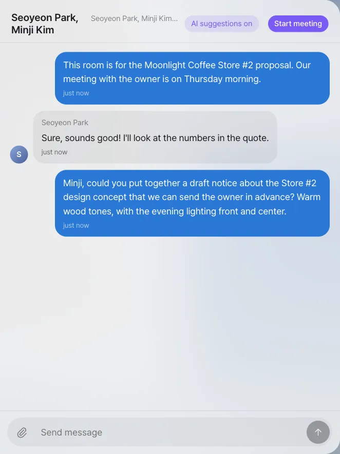
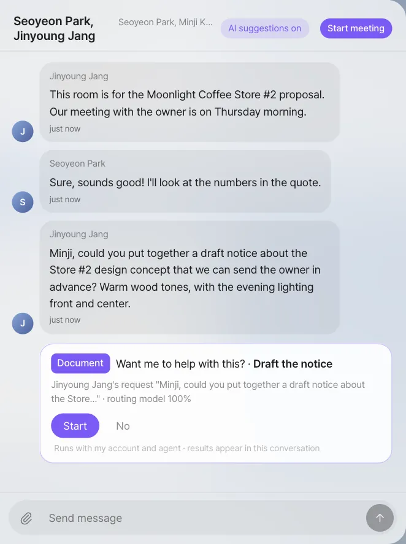
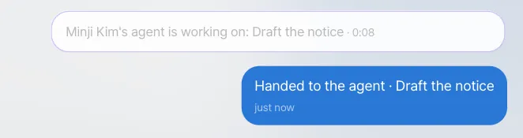
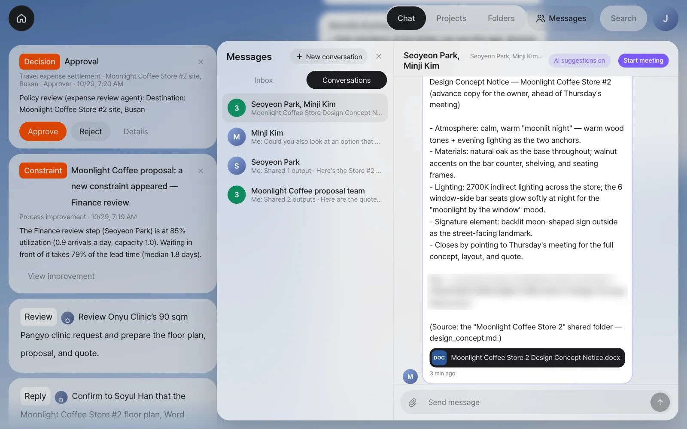
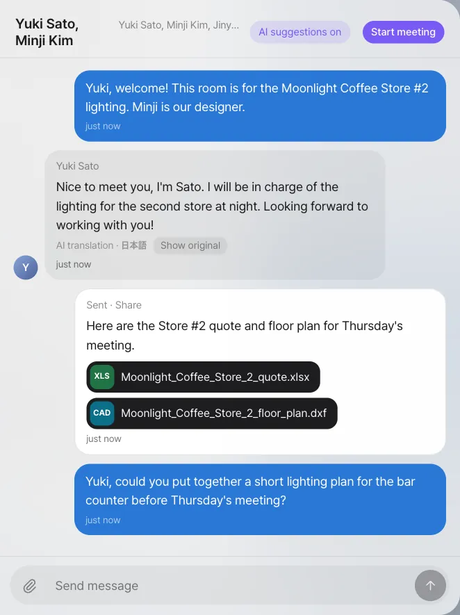
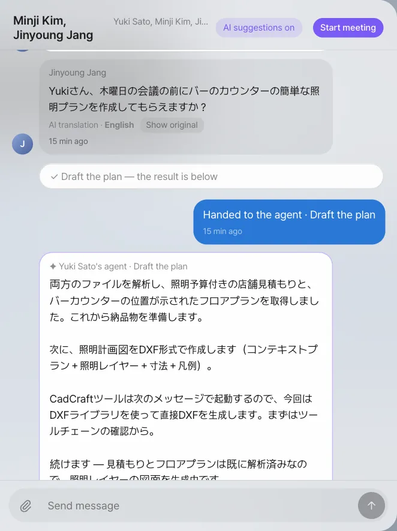

While you talk with teammates in one-on-one and group rooms, when someone asks for a piece of work, the room helper shows a "Want me to help with this?" card only to the person who was asked. When they click Start, their agent does the work and posts the result in the room. A teammate who writes in another language reads everything in their own language, and you read them in yours.
Why the messenger is inside the app#
Up to Chapter 14, team lead Jinyoung Jang shared outputs and handed work over with @mentions. But work always moves in short back-and-forths like "Could you take a look? → I fixed it → How about this?" If you do this back-and-forth in an outside messenger, two things break.
- Requests in the conversation don't turn into work. The person asked has to explain it all over again to their own assistant.
- Files and decisions exchanged in the room aren't kept in the work record.
The Lite messenger connects these two. Rooms use Process GPT's chat rooms as they are, so messages written on the Process GPT screen show up in the same room too.
| Feature | What it does |
|---|---|
| One-on-one conversation | A conversation with one teammate. You always have the same room with the same person. Shares and mentions pile up in this room too |
| Group conversation | Pick several people and it becomes a group conversation (up to 8 people) |
| Attach outputs | Pick one of your outputs with the paper clip button and send it. Only room members open it, each as their own copy |
| Unread count | Shown on the Messages button at the top and in the conversation list |
| Room helper | Notices requests in the conversation and shows a suggestion card to the person asked |
| Start meeting | Opens an online meeting right from the room (Chapter 16) |
| Translation | Messages, agent replies and suggestion cards in another language than yours read in your main language, with Show original one click away |
Try it 1 — make a group room#
Do this from team lead Jinyoung Jang's account.
- Click Messages at the top right. A window opens with Inbox and Conversation tabs on the left.
- Click + New conversation and pick the teammates to talk with. Pick Minji Kim (designer) and Seoyeon Park (Finance). Picking two or more makes it a group conversation. Teammates you message often come first.
- Click Start conversation and send the first message.
This room is for the Moonlight Coffee Store #2 proposal. Our meeting with the owner is on Thursday morning.
Open the same room from Seoyeon Park's account and reply (Sure, sounds good! I'll look at the numbers in the quote.). It shows up on team lead Jinyoung Jang's screen in real time, and the unread count goes up.
Room names
Group rooms don't get a separate name. The list shows the names of the members other than you. In our run, team lead Jinyoung Jang's screen showed "Seoyeon Park, Minji Kim", and Minji Kim's screen showed "Seoyeon Park, Jinyoung Jang".
Try it 2 — from a request in the conversation to work#
Now team lead Jinyoung Jang asks Minji Kim for some work. Instead of an instruction to an assistant, write it just the way you'd normally talk to a colleague.
Minji, could you put together a draft notice about the Store #2 design concept that we can send the owner in advance? Warm wood tones, with the evening lighting front and center.

Open the same room from Minji Kim's account. A suggestion card is right below the request.

Check: The card is only on Minji Kim's screen. It isn't on the screen of team lead Jinyoung Jang, who asked, or of Seoyeon Park, who wasn't named.
How the helper notices#
Calling a big working AI model for every message would be slow and expensive. So the helper filters in three stages.
| Stage | What it does | Example |
|---|---|---|
| ① Rules | Short messages, emoji, greetings, chitchat and anything that isn't phrased as a request are skipped right away | "lol nice", "What should we get for lunch?" |
| ② Routing model | A small model just for decisions picks "Is this asking for work?" and "What kind of work?" (document, table, summary, schedule, reply, process…). In our run, judging one message took about 3 seconds on a busy server | "Could you put together a draft notice?" → write a document |
| ③ Recipient | Shows the card only to the person named in the message. If nobody is named, it shows the card to everyone except the sender | "Minji" → Minji Kim |
If the request matches a registered process ("Please file my travel expense settlement" and so on), the card changes to Start ○○. The process candidates are the registered processes that share a word with the request, so in a tenant that already has processes such as "Moonlight Coffee proposal", a request can come back as Start Moonlight Coffee proposal. Click No if that isn't what was meant. No big model is used to notice requests. The big model works only after a person clicks Start.
Try it 3 — when you click Start#
Minji Kim clicks Start on the card. The room gets "Handed to the agent · Draft the notice", and the card turns into a progress indicator.

The work is done with the account and agent of the person who clicked. Minji Kim's agent gets the room's recent conversation too, makes the document, and posts the result in the room. In our run it took under 3 minutes.

Check
- The room has a ✦ Minji Kim's agent · Draft the notice message and a
.docxfile chip (in our run,Moonlight Coffee Store 2 Design Concept Notice.docx). - When Jinyoung Jang or Seoyeon Park clicks the file chip, their own copy opens. Even if they edit it, Minji Kim's original stays the same.
The wording differs from run to run. Even if the concept wording differs from the screenshot, it worked as long as a file chip appeared.
Try it 4 — a teammate who writes in another language#
Not everyone on a team works in the same language. For the Store #2 evening lighting, the team works with Yuki Sato, a lighting designer at a partner studio in Tokyo, who writes and speaks Japanese. (People and companies in this tutorial are examples.)
Everyone has a main language: the language you read messages in and speak in meetings. You set it in Settings › Accounts › About me › Main language (it's separate from Language, the screen language). The screens come in Korean and English only, so Yuki, whose main language is 日本語, works with English screens.
- From team lead Jinyoung Jang's account, click + New conversation, pick Minji Kim and Yuki Sato, and click Start conversation. Send a welcome (
Yuki, welcome! This room is for the Moonlight Coffee Store #2 lighting. Minji is our designer.). - Yuki answers from her account, in Japanese:
はじめまして、佐藤です。2号店の夜の照明を担当します。よろしくお願いします！
On Jinyoung Jang's screen, her message reads in English, with AI translation · 日本語 and Show original below it. Show original shows the Japanese; Show translation goes back.

- With the paper clip, Jinyoung attaches the Store #2 quote and floor plan (
Here are the Store #2 quote and floor plan for Thursday's meeting.), then asks in English:
Yuki, could you put together a short lighting plan for the bar counter before Thursday's meeting?
- On Yuki Sato's screen, Jinyoung's messages read in Japanese, and so does the suggestion card under the request (its title and the request quoted in it). Yuki clicks Start. Her agent reads the room, writes the plan and posts it. In our run it made a Word plan and a lighting drawing (
.dxf) in about 12 minutes, kept inside the quote's lighting line.

Her agent writes in the language of her screens, English. So Jinyoung and Minji read the reply as it was written, and Yuki reads it in Japanese.
| What | How it reads |
|---|---|
| A teammate's message in another language | In your main language, with AI translation and the original's language and Show original / Show translation |
| Agents' replies and the helper's rows in the room | Translated the same way when you open them |
| Suggestion cards | Their title and reason in your main language |
| Your own messages, and messages already in your language | As written, no translation |
| Meeting and material cards | Drawn by the screen in its own language |
Check
- On Jinyoung Jang's screen, Yuki's message shows AI translation · 日本語. On Minji Kim's screen (English) it reads in English too.
- On Yuki Sato's screen, Jinyoung's messages show AI translation · English.
How it works: each message is translated once for each language it's read in, by a small, fast model on the server's OpenAI key, and kept. Opening the room again doesn't call the model again. Only the room's members get translations.
Limits of translation
- It needs the OpenAI key on the server (the same one as meeting transcription, Chapter 1). Without it, or when the operator has turned messenger translation off, messages show as written.
- A translation can word things a little differently. For amounts, dates and names, check Show original.
- The helper's first filter (① Rules) reads Korean and English words. A request written only in Japanese (or another language) doesn't get a suggestion card yet. Requests in English or Korean do, whoever they're for. In meetings, requests are read through their translation (Chapter 16).
Handling suggestion cards#
| What you want | How |
|---|---|
| Ignore just this suggestion | No — it disappears only from your screen |
| Stop getting suggestions in this room | Click AI suggestions on in the room header to switch it to AI suggestions off |
| Handle a request you made yourself | The person who asked doesn't get a card. Ask in your own assistant chat directly |
When no suggestion appears
- Check that you wrote it as a request. "Could you put together a draft notice?" gets picked up better than "A draft notice would be good."
- It needs a word for what the work is (quote, document, summary, schedule, reply, process and so on).
- On an install with no routing model connected, only the rules run and no suggestions appear. The operator sets up the connection (Chapter 1).
How one-on-one conversations relate to the inbox#
If you shared the quote with Seoyeon Park in Chapter 14, the Conversation tab already has a one-on-one room with Seoyeon Park. Shares and @mentions also show in the inbox, but they actually pile up as messages in the two people's one-on-one room. That's why "Could you look at the quote? → Checked it, just fix the VAT" continues in one room.
In the next chapter, you open an online meeting right from this group room (Chapter 16). Requests during the meeting also lead to suggestion cards like these, and what was said in the meeting stays in this room on its own.
Check your understanding
- In the group room, send
Jinyoung, could you summarize what we've discussed so far before Thursday's meeting?from Seoyeon Park's account. Whose screen does the suggestion card appear on? What kind of work is on the card? - What happens if you send
What should we have for lunch today?in the same room? Why? - From Minji Kim's account, click AI suggestions on in the room to turn it off, then send Minji Kim a request again from Jinyoung Jang's account. What's different?
- In the room with Yuki Sato, Jinyoung Jang writes
Thanks, Yuki!. What do Yuki Sato and Minji Kim each see?
Answer
- Only on team lead Jinyoung Jang's screen (the person named). The kind of work is Summary · Summarize this conversation. The routing model picks it, so once in a while a different kind may come up. If the request has a word that overlaps with a registered process name (for example, quote), it can also become a Start ○○ card.
- No card appears. It has a chitchat word (lunch) and no word pointing to work, so it's filtered out at the ① Rules stage. The routing model isn't called either.
- It's a per-room setting, so no one gets suggestion cards in that room. Messages still go back and forth as usual. If you turn it back on, it suggests again from the next message.
- Yuki Sato sees it in Japanese, with AI translation · English and Show original. Minji Kim sees it as written, because her main language is English. On Jinyoung Jang's own screen it isn't translated either.